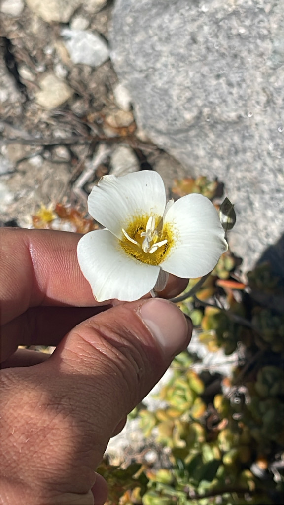

Fifteen days on the Big SEKI, July 4–18. I started at Roads End, climbed out of Kings Canyon on Copper Creek, and worked clockwise through the high country: south along the JMT, over Kearsarge and back, down the Kern, then west across Kaweah Gap and north over Elizabeth Pass. Back to Roads End by way of Deadman Canyon, Roaring River, and Avalanche Pass.
Day 1 · July 4: Roads End to Granite Lake
I headed up Copper Creek from Roads End and into Granite Basin. First night at Granite Lake.
Camp: Granite Lake.
Day 2 · July 5: Granite Lake to Simpson Meadow
Over Granite Pass, then a long descent to Simpson Meadow on the Middle Fork Kings.
Camp: Simpson Meadow.
Day 3 · July 6: Up the Middle Fork Kings
I followed the Middle Fork upstream toward Palisade Creek. The mariposa lily below was from this stretch.
Camp: Middle Fork Kings, approaching Palisade Creek.
Day 4 · July 7: Palisade Creek to Lower Palisade Lake
Up Palisade Creek and the Golden Staircase to Lower Palisade Lake.
Camp: Lower Palisade Lake.
Day 5 · July 8: Mather Pass to Lake Marjorie
Over Mather Pass and south through Upper Basin to Lake Marjorie.
Camp: Lake Marjorie.
Day 6 · July 9: Pinchot Pass to Twin Lakes
From Lake Marjorie over Pinchot Pass, then down to Twin Lakes.
Camp: Twin Lakes, south of Pinchot Pass.
Day 7 · July 10: Woods Creek to Rae Lakes
Down to Woods Creek, then back up to Rae Lakes.
Camp: Rae Lakes.
Day 8 · July 11: Glen Pass and Kearsarge Pass
Over Glen Pass, then east over Kearsarge. I think this was the night at Gilbert Lake.
Camp: Gilbert Lake, if I remember right.
Day 9 · July 12: Back over Kearsarge
Back over Kearsarge Pass and up Bubbs Creek. I camped around Wheelbarrow Camp, north of Forester.
Camp: Around Wheelbarrow Camp, north of Forester Pass.
Day 10 · July 13: Forester Pass to Junction Meadow
Over Forester Pass and south through Tyndall Creek and Wallace Creek country, then down to Junction Meadow in the Kern.
Camp: Junction Meadow.
Day 11 · July 14: Down the Kern to Moraine Lake
South through Kern Canyon, then up toward Moraine Lake on the High Sierra Trail.
Camp: Moraine Lake.
Day 12 · July 15: Kaweah Gap to Hamilton Lakes
Through Big Arroyo and over Kaweah Gap to Hamilton Lakes. Trout in the lake that evening.
Camp: Hamilton Lakes.
Day 13 · July 16: Elizabeth Pass to Deadman Canyon
Out of Hamilton Lakes and over Elizabeth Pass. I camped in Deadman Canyon, north of the pass.
Camp: Deadman Canyon, north of Elizabeth Pass.
Day 14 · July 17: Roaring River and Avalanche Pass
Down Deadman Canyon to Roaring River, then over Avalanche Pass toward Sphinx Creek.
Camp: Sphinx Creek.
Day 15 · July 18: Back to Roads End
Down Sphinx Creek to Bubbs Creek and back to Roads End.
Along the way
White bog orchids on the climb out, a mountain cicada near Granite Pass, mariposa lilies above the Middle Fork. Marmots in the high country, trout at Hamilton Lakes, and fungi in the forest on the way home. Plenty to stop for between passes.

Route lines follow mapped trails; camp markers show the general area. Trail data: NPS / USFS. Lily photograph: CC BY-NC.